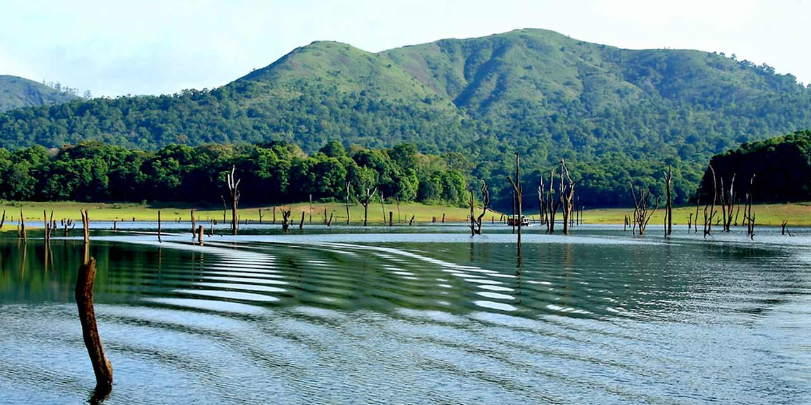

Thekkady, in Kerala's Idukki district, is home to one of India's most biodiverse wildlife sanctuaries — Periyar Tiger Reserve. But Thekkady is much more than a wildlife destination. Nestled in the heart of Kerala's spice country, it combines jungle experiences with cardamom-scented plantation walks, Kathakali cultural performances and some of the most distinctive cuisine in the state. Here's everything you need to plan the perfect visit.
Periyar Lake Boat Safari
The classic Thekkady experience — a 2-hour motor launch ride on Periyar Lake, which is entirely within the tiger reserve. The lake's shores are where elephants, Indian gaur (bison), spotted deer, Malabar giant squirrels and over 300 bird species come to drink. Best sightings: Early morning trips (6:00 AM–8:00 AM) dramatically outperform afternoon sessions. Book tickets through the Forest Department counter at the KTDC Aranya Nivas complex — online advance booking is also available.
Boat types: KTDC operates large motor launches; private operators offer smaller bamboo rafting trips (more intimate, better for photography but no guarantee of wildlife encounters). The official KTDC boats are safer and more regulated.
Bamboo Rafting — A Unique Alternative
For those wanting a deeper experience, Periyar's bamboo rafting programme sends small groups into the core forest on traditional bamboo rafts accompanied by ex-poacher tribal guides. This 4–6 hour experience gets you far deeper into the sanctuary than the motor launches. Permits are strictly limited (only 12 participants per day) — book at least 1 week in advance through the Forest Department's eco-tourism centre.
Spice Plantation Walk
The area around Thekkady is one of India's most productive spice-growing regions — cardamom, black pepper, cinnamon, cloves, nutmeg and vanilla all grow here. Guided plantation walks (1–2 hours) take you through working spice gardens where you can smell, taste and touch the plants in their natural state. The best plantation tours are run by family-owned estates rather than commercial operations — ask your Nature Green Holidays driver to recommend a good one.
Elephant Interaction at Thekkady
Several wildlife and eco-tourism operators offer supervised elephant interactions — the best are those that prioritise welfare and observe the animals in their natural habitat rather than rides or shows. The Periyar Tiger Reserve's own elephant programme (Forest Department) is the most ethical option. Guests can observe the daily care routine of sanctuary elephants with trained mahouts.
Kathakali Performance
Thekkady has several cultural centres offering nightly Kathakali dance performances — Kerala's 400-year-old classical dance-drama tradition. The best centres offer a make-up demonstration one hour before the performance, where artists apply their elaborate face paint and costume over the course of an hour — fascinating to watch. The performance itself (1–1.5 hours) tells stories from the Mahabharata and Ramayana through precise hand gestures, expressions and movement.
Best Resorts in Thekkady
- Spice plantation resorts: The most atmospheric option — private cottages surrounded by cardamom plants and pepper vines. Ideal for honeymoons and couples.
- Forest-edge resorts: Offer naturalist-guided morning treks and bird walks within the buffer zone. Good for wildlife enthusiasts.
- Budget: Kumily town (the commercial centre near Thekkady) has several clean, affordable guesthouses from ₹800/night.
How to Get to Thekkady from Ernakulam
Thekkady is 190 km from Ernakulam (approximately 5 hours by road through Kottayam or Coimbatore Highway). The most comfortable option is a private taxi or tempo traveller from Nature Green Holidays. We recommend leaving Ernakulam by 7:00 AM to arrive in time for the afternoon Periyar Lake boat safari at 3:30 PM.
Best Time to Visit Thekkady
October to May is ideal for wildlife sightings. December to March brings the best weather. The plantation walk is excellent year-round (spice plants are always in some stage of growth or fruiting). Avoid June–August monsoon for the lake safari — high water levels reduce the number of animals at the shore, and the heavy rain limits visibility.
Insider tip: The evening before your lake safari, walk along the path near the KTDC boat jetty at dusk. Wild elephants often come to the lake edge at sunset just outside the formal safari area, and you can watch them up close without any boat queue or crowd. Our drivers know exactly which spots to take you to.